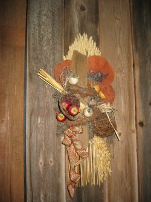

FAQ - spørsmål / svar om PREP-samlivskurs
Vi klarer da selv å ordne opp i problemene våre?
Flott! Det er riktig at alle har ressurser i seg til å kunne klare å løse sine egne problemer. I PREP lærer dere å bruke verktøy, nettopp for at dere skal kunne løse egne problemer bedre.
En bilmekanikere bruker verktøy der de kunne brukt fingrene for å skru muttere. Vi ønsker å gi dere et verktøy på samlivets område for å sette dere bedre i stand til å jobbe effektivt i et parforhold.

{kind=link}
Vi ønsker ikke å utlevere oss?
Nei, det får dere ikke sjansen til heller. Det er verken terapeuter eller grupper på et PREP-kurs. Den eneste du ”utleverer” deg til er partneren din, og det er gjensidig. Det er dere to som sammen må utfylle hverandre for å få et godt utbytte av et PREP-kurs.
Vi har ikke problemer vi?
Flott! Da har dere virkelig sjansen til å forebygge, før det smeller.
Det er når forholdet ”går på skinner” en skal ta et kommunikasjonskurs. Da er en mest motivert til å utvikle seg selv og forholdet.
Vi ønsker ikke treffe naboen?
Nei, det ønsker sannsynligvis ikke naboen heller. Alle parene tar seg kanskje i å tenke: hva må de andre tro om oss siden vi er her…. Alle har altså nok med seg selv. Men siden det å gå på et kommunikasjonskurs er ”stuerent”, er dere i grunnen ganske smarte både dere og naboen.
Vi har egentlig ganske store problemer. Kan vi da ta et PREP-kurs?
Hvis dere har lyst til å nyte en helg sammen, eller jobbe med forholdet, er dere hjertelig velkommen til et samlivskurs som PREP. Et PREP-kurs er intenst og lærerikt. Det spenner over mange forskjellige temaer som er aktuelle for alle parforhold. Uansett vil dere kunne finne noe som nettopp dere får utbytte av å jobbe med. Også par som vurderer terapi vil ha et stort utbytte av kurset, såframt man ikke har bestemt seg for å gå fra hverandre. Etter en helg vet paret mer om hva de vil jobbe videre med i en evt. terapisituasjon.